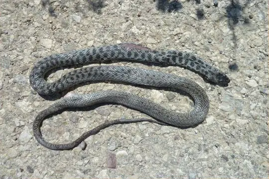
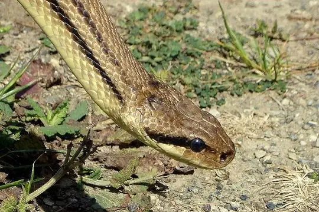

Snakes of Slovenia
8 snake species are recorded in Slovenia in SnakeList: 2 venomous and 6 non-venomous, from 2 families.
- 8species
- 2venomous
- 6non-venomous
- 2families
Species
Showing 8 species
 Aesculapian SnakeZamenis longissimus
Aesculapian SnakeZamenis longissimus
Balkan Whip SnakeHierophis gemonensis Cat SnakeTelescopus fallax
Cat SnakeTelescopus fallax Dice SnakeNatrix tessellata
Dice SnakeNatrix tessellata
Four-lined SnakeElaphe quatuorlineata Grass SnakeNatrix natrix
Grass SnakeNatrix natrix Nose-horned ViperVipera ammodytes
Nose-horned ViperVipera ammodytes- No photo yetVipera illyrica
No snakes in Slovenia match.